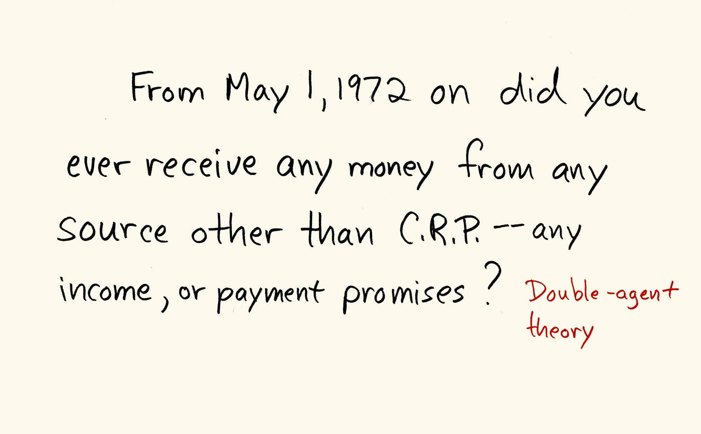

Watergate Question Prompts from H. William Shure to Lowell Weicker
March 30, 1973
Handwritten questions for Senator Lowell Weicker during the Senate Watergate Committee hearings. This specific card is for the Alfred Baldwin testimony and discusses the idea of a "double-agent" theory.
Papers of Lowell P. Weicker, Jr., MSS 13900, Box 1649, Folder 10, Small Special Collections Library, University of Virginia
